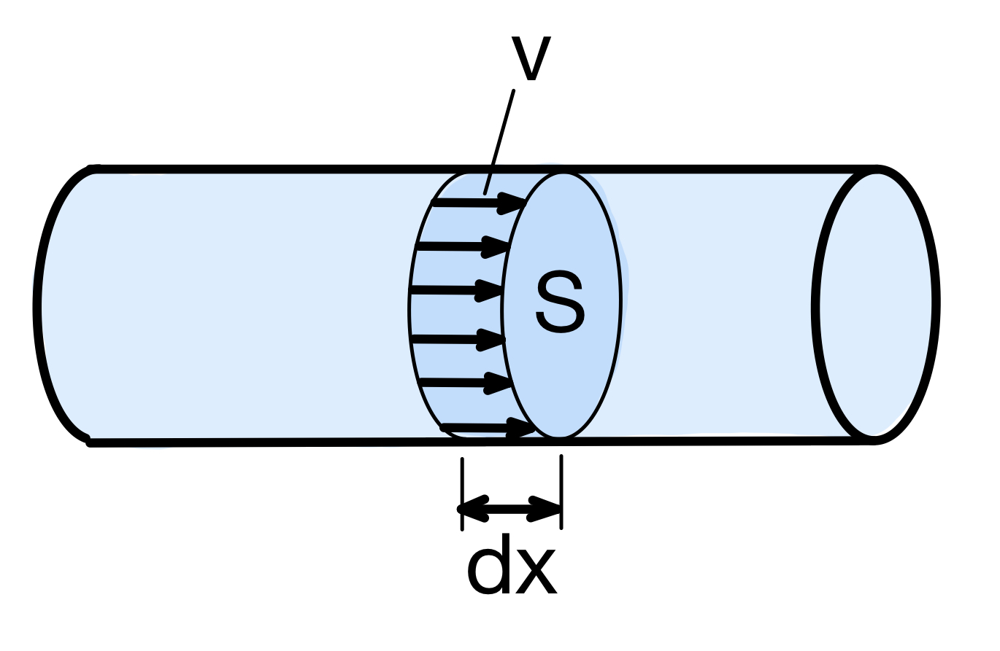
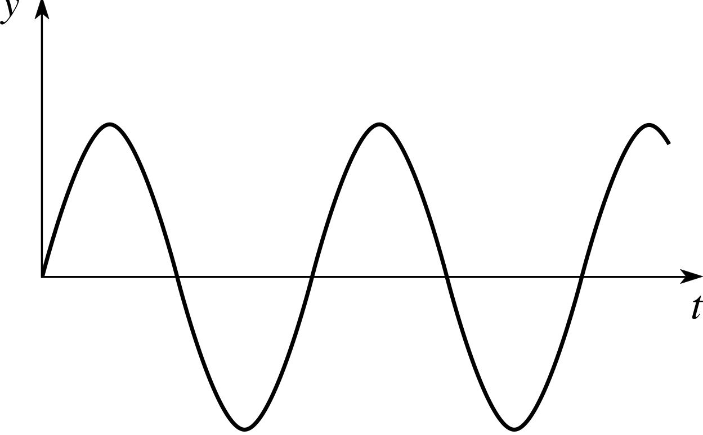
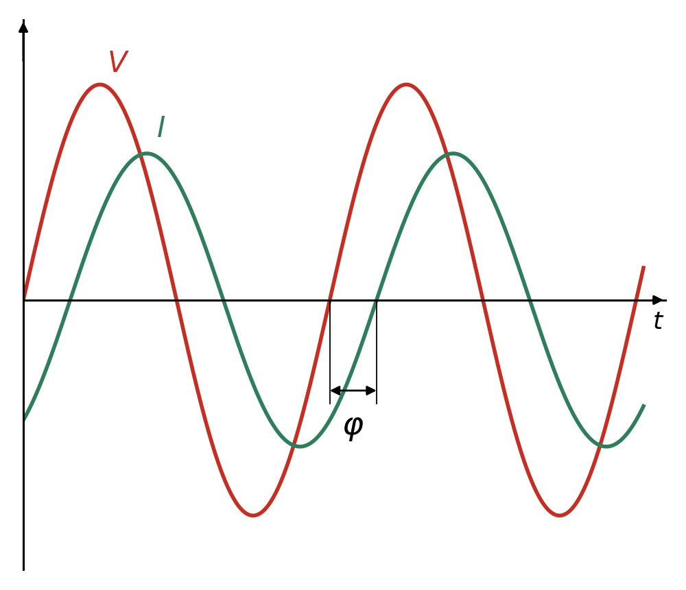

Podemos observar que el trabajo realizado por una máquina depende de la fuerza realizada y el espacio recorrido, pero no del tiempo empleado. Por ejemplo, se realiza el mismo trabajo levantando una carga de 100 kg a una altura de 20 m si se tarda 1 minuto que si se tarda 1 hora.
Para relacionar el trabajo realizado con el tiempo empleado se define la magnitud Potencia que es igual al trabajo realizado dividido entre el tiempo empleado en realizarlo:
\[P= \frac{W}{t} \]
En el caso de que el trabajo no se realice de forma uniforme a lo largo del tiempo, se divide el tiempo total en intervalos muy pequeños de tamaño infinitesimal, dt, de forma que el trabajo realizado en dicho intervalo de tiempo, dW, sea prácticamente constante. Definimos entonces la potencia instantánea como la derivada del trabajo respecto del tiempo:
\[P= \frac{dW}{dt} \]
Por otra parte, teniendo en cuenta que \(dW = \vec{F} \cdot d\vec{s}\), tenemos que la potencia es el producto escalar de la fuerza por la velocidad:
\[P=\frac{\vec{F}\cdot d\vec{s}}{dt}=\vec{F}\cdot \vec{v} \]
Unidades de Potencia
En el S.I. la potencia se mide en vatios (1 W= 1 J/s)
Cuando tratamos con potencia mecánica, es habitual también se utiliza el caballo de vapor (CV) (1 CV = 735,5 W)
Ejercicio 13: Una escalera mecánica de unos grandes almacenes se diseña para poder transportar a 9000 personas por hora a una velocidad constante de 25 m/min, salvando un desnivel entre pisos de 5 m. Determina la potencia media necesaria que debe suministrar el motor, suponiendo que las personas tienen un peso medio de 75 kg.
Ejercicio 14: Deseamos elevar un cuerpo con un motor de 250 W de potencia. Si con esa potencia el cuerpo asciende 15 m en 3 segundos, determina la masa del cuerpo.
Potencia de rotación
Cuando un cuerpo gira a una velocidad angular ω por la acción de un par motor M, la potencia instantánea vendrá́ dada por:
\[P=\frac{dW}{dt}=\frac{M \cdot d\theta }{dt}=M \cdot\frac{ d\theta }{dt}=M\cdot \omega \]
\[P=M\cdot \omega\]
En esta expresión, si expresamos M en N·m y ω en rad/s, la potencia vendrá́ dada en vatios (W).
Habitualmente en ingeniería, al estudiar las máquinas no manejamos la velocidad angular sino la frecuencia de giro (n). Además, no la expresamos en hercios (Hz) sino en revoluciones por minuto (rpm). La relación entre ambas magnitudes es la siguiente:
\[ \omega = \frac{2\pi \cdot n}{60}\]
Y si el punto que gira está a una distancia r del eje, su velocidad lineal se relaciona con la angular de esta forma:
\[v=\omega \cdot r\]
Potencia hidráulica
Si por una tubería de sección S circula un fluido a una velocidad v, podemos calcular el caudal Q (volumen de fluido que circula por unidad de tiempo) de la siguiente manera:
- Nos fijamos en una sección cualquiera de fluido y vemos lo que ha avanzado en un intervalo de tiempo dt, suficientemente pequeño como para que la velocidad no varíe y el movimiento se pueda considerar uniforme.
- Esa distancia que ha avanzado el fluido (dx) puede calcularse directamente como \(dx=v \cdot dt \), al ser movimiento uniforme.

- El volumen barrido por el fluido en ese tiempo dt será dV que, al ser el volumen de un cilindro, se puede calcular fácilmente como \(dV = S \cdot dx \)
- El caudal, definido como el volumen de fluido que atraviesa una sección cualquiera del conducto en la unidad de tiempo será, por tanto:
\[Q = \frac{dV}{dt}=\frac{S \cdot dx}{dt}= S \cdot \frac{dx}{dt}=S \cdot v \]
\[Q=S\cdot v\]
de donde se deduce que \(v = \frac{Q}{S}\).
Como la fuerza que impulsa al fluido es paralela a la velocidad (ambas llevan la dirección de la tubería), la potencia empleada en mover el fluido puede expresarse como:
\[P=\vec{F}\cdot \vec{v}=F \cdot v\]
Sustituyendo la expresión de la velocidad, tenemos que:
\[P=F \cdot v=F \cdot \frac{Q}{S}= \frac{F}{S}\cdot Q\]
En los fluidos no se utiliza la magnitud fuerza, sino la presión, que recordemos que era \(p=\frac{F}{S}\). Por lo tanto, la expresión de la potencia hidráulica queda como:
\[P=p \cdot Q\]
Unidades
En la expresión de la potencia, si expresamos p en pascales (Pa) y Q en m3/s, obtenemos la potencia en vatios W.
En ocasiones, es posible que la presión te la den en otras unidades y tienes que saber convertirlas a pascales:
- bares (bar): 1 bar = 105 Pa
- kilogramos-fuerza por centímetro cuadrado (kg/cm2): 1 kg/cm2 = 98100 Pa
- atmósferas (atm): 1 atm = 101325 Pa
- milímetros de mercurio (mmHg): 1 atm = 760 mmHg
- libras por pulgada cuadrada (psi): 1 psi = 6894,76 Pa
Las conversiones destacadas en negrita debes memorizarlas para ser capaz de hacerlas en cualquier situación.
Ejercicio 15: De una presa situada a una altura de 80 m sobre la zona de turbinas desciende una tubería que admite un caudal de 1 m3/s. Determina la potencia capaz de suministrar en caso de no producirse ninguna pérdida.
Ejercicio 16: Conocemos que la potencia que es capaz de producir una presa hidráulica es de 1 MW, y que la tubería que desciende a la zona de turbinas admite un caudal de 2 m3/s. Determina la altura a la que se encontrarán las turbinas desde la superficie del agua.
Potencia eléctrica
Corriente continua
Cuando estamos analizando procesos en los que interviene la energía eléctrica, para conocer la potencia se emplea como expresión el producto de la diferencia de potencial aplicada por la intensidad de corriente eléctrica que recorre el circuito. Si aplicamos, además, la ley de Ohm (\(V=R\cdot I\)), podemos expresar la potencia eléctrica en función de las otras magnitudes eléctricas básicas:
\[P_{E}=V\cdot I=R\cdot I^{2}=\frac{V^{2}}{R}\]
donde:
- P: potencia eléctrica expresada en vatios (W).
- V: diferencia de potencial, o tensión de alimentación, expresada en voltios (V).
- I: intensidad de corriente que atraviesa el circuito expresada en amperios (A).
- R: resistencia que ofrece el circuito, en ohmios (Ω).
Corriente alterna
Cuando tenemos corriente alterna, tanto el voltaje como la intensidad de corriente van cambiando continuamente sus valores. En concreto, fluctúan entre un valor máximo y ese mismo valor negativo con una oscilación armónica. Si representamos una onda de tensión o una de intensidad frente al tiempo, obtenemos algo como esto:

En general, las ondas de tensión y de intensidad no van "a la vez" (en fase), sino que tienen un desfase entre ellas, dependiendo del tipo de dispositivos que haya en el circuito.

El desfase influye en la cantidad de potencia eléctrica que realmente se puede convertir en algo útil. Esa potencia útil se denomina potencia activa y tiene la siguiente expresión:\[P_{E}=V\cdot I\cdot \cos \varphi\]
siendo φ el ángulo de desfase que presentan la corriente eléctrica y la tensión de alimentación. Al coseno de dicho ángulo se le denomina factor de potencia, por ser precisamente el factor de toda la potencia (V·I) que puede ser útil.
En el caso de un sistema eléctrico trifásico equilibrado, la potencia activa vendrá expresada por:
\[P_{E}=\sqrt{3}\cdot V\cdot I\cdot \cos \varphi\]
Ejercicio 17: Un motor eléctrico de CC conectado a una línea de 230 V y 20 A se utiliza para elevar un ascensor de 2 000 kg a una altura de 21 m en un tiempo de 180 s. Calcula:
a) La potencia absorbida por el motor.
b) La potencia útil.
Ejercicio 18: Un receptor eléctrico de 1 kW de potencia está conectado a una red monofásica de 230 V y absorbe 5 A de intensidad. Determina el factor de potencia para dicho receptor.